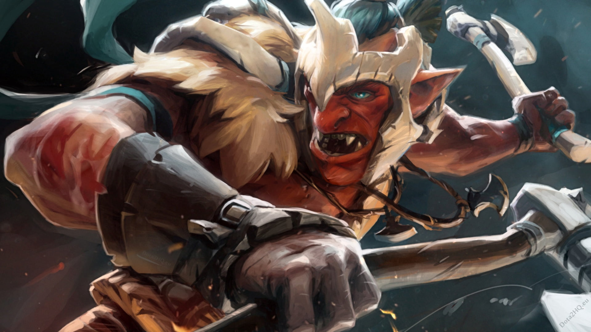

HTML/CSS WEBSITE MADE BY MARTIN (MIO) LUNA

HTML/CSS WEBSITE MADE BY MARTIN (MIO) LUNA
TROLL WARLORD

It's an easy thing to offend a troll. A prickly and contentious race, trolls thrive on argument and strife, missing no
excuse to raise their voices in dispute. Males grow to maturity in subterranean chambers beneath their matriarch's
domicile, feeding and amusing themselves while contributing nothing. Often they stay for years beyond the age of
maturity, while the matriarch provides them with sustenance. When young trolls are finally pushed from their
sub-chamber, they gather with others of their kind, forming roving gangs of malcontents who complain loudly about all
manner of vexation.
As much as trolls love to argue, imagine how rare it is for a troll to be driven from his own kind for being too
difficult to get along with. Such was Jah'rakal's fate, a monger troll from deep in the Hoven. So deluded was he, so
bitter and abrasive, that even other trolls found his company intolerable. After one particularly vitriolic outburst in
which he claimed the lion's share of loot from their latest raid, his cohorts finally snapped. They turned on him, beat
him with clubs, and drove him from the encampment. Enraged at his banishment, he returned the next day, armed with
steel, and slew them all, one by one. He then swore a blood oath: he would ever after be a fighting force unto himself.
Now he roams the world as the Troll Warlord, bitter and angry, the Imperial high commander of an army of one.
Jah'rakal, the Troll Warlord, is a ranged agility hero able to output mighty damage competitively at range and in melee.
His Berserker's Rage gives him the unique ability to change his attack position from ranged to melee and back at will as
the situation warrants. When in close combat, his stats are increased accordingly: he gains bonus armor, movement speed,
reduced base attack time, and the ability to root. Not only does this greatly improve the Troll Warlord, but allows him
to overpower most other carries, as well as permanently ensnare a target for extended amounts of time. The Troll Warlord
is an axe specialist, using them in his unique Whirling Axes, which has two variations: the first is available to his
ranged form wherein he throws axes in a cone formation to damage and slow enemies. The second is available to his melee
form, whirling axes around himself in a small radius to damage and blind nearby enemies. In keeping with his savage
nature, Fervor builds up the Warlord's momentum, granting him attack speed with each consecutive hit on the same target,
though the momentum is lost upon switching targets. His Ultimate, Battle Trance, increases his attack speed further,
boosts his movement speed, prevents death and grants lifesteal at the expense of almost complete loss of control when
enemies are nearby, mindlessly attacking them. Notorious for his superbly fast attack speed that can be matched by few,
Jah'rakal is truly a force to be reckoned with.